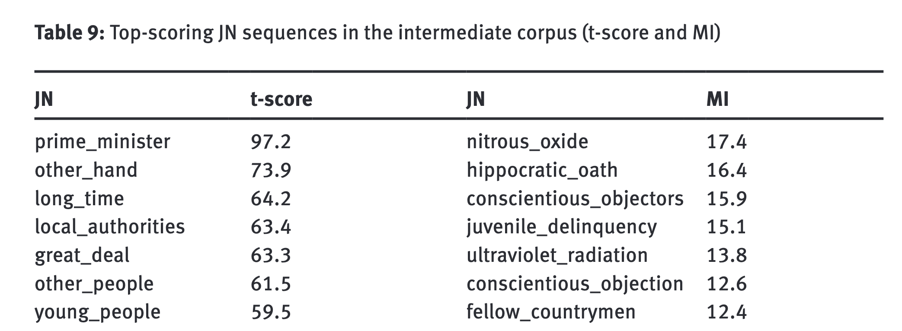
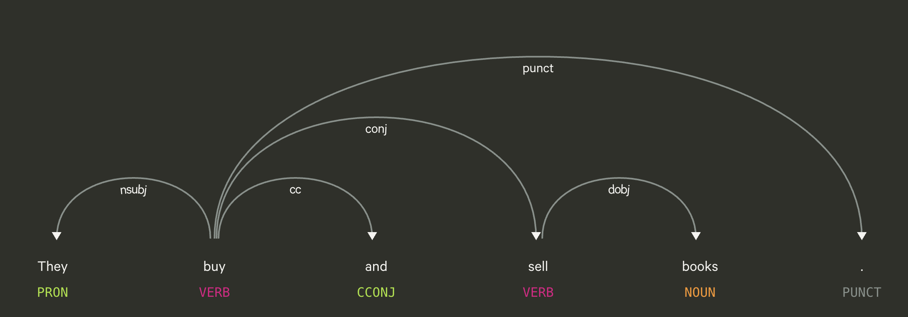
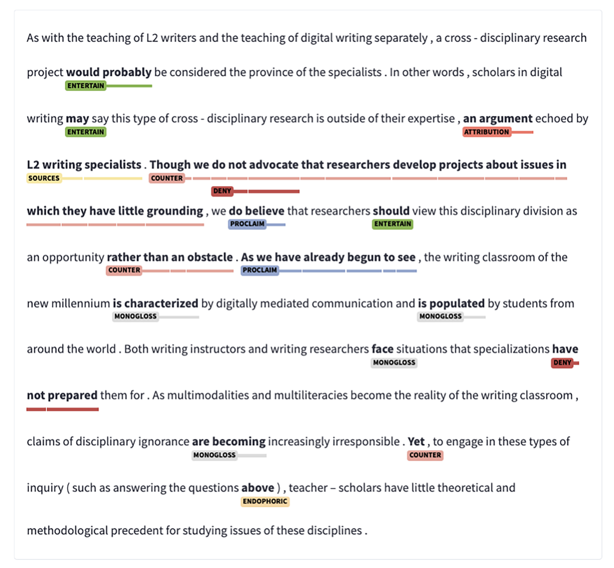
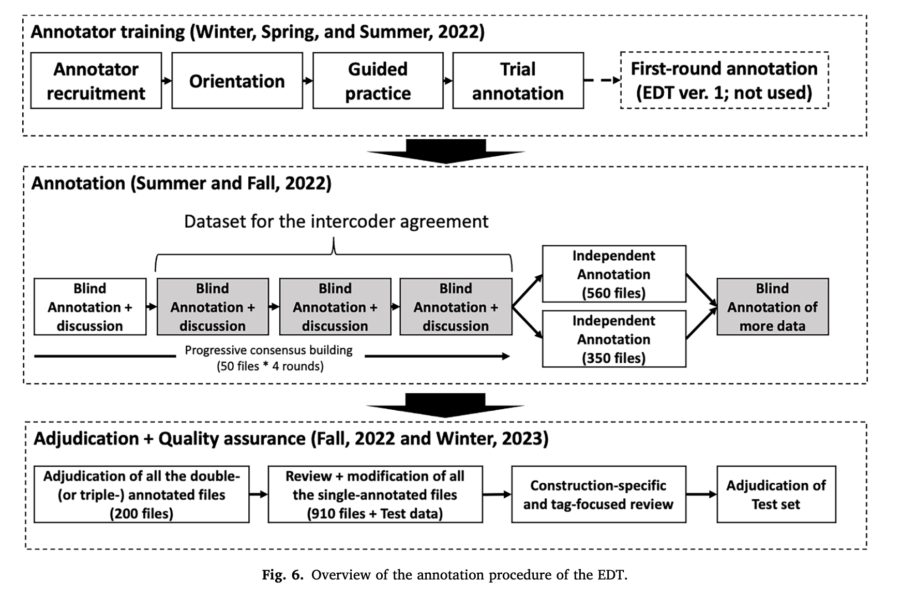
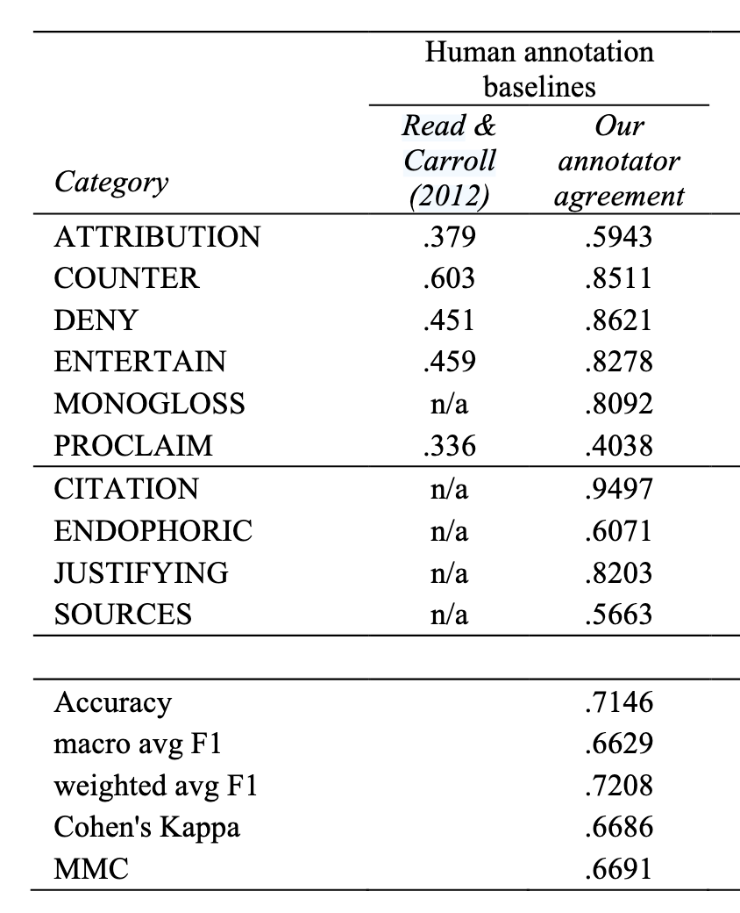

Linguistic Data Analysis II
Day 2 · Annotation, Gold Standards & Metrics (2-1)
Masaki EGUCHI, Ph.D.
Tohoku University · Summer 2026
By the end of this session, you will be able to:
Annotation = adding interpretive labels to the available linguistic data.
Label:
Unit of analysis:
POS tagging = labeling every token with its grammatical category (NOUN, VERB, ADJ…). One label per token — the simplest sequence-labelling task.
The_DET dogs_NOUN ran_VERB quickly_ADV ._PUNCT
Four of the 17 UPOS tags
| Tag | Category | In the example |
|---|---|---|
DET |
determiner | The |
NOUN |
noun | dogs |
VERB |
verb | ran |
ADV |
adverb | quickly |
Four out of 36 Penn tags set
| Tag | Category | In the example |
|---|---|---|
DT |
determiner | The |
NNS |
noun, plural | dogs |
VBD |
verb, past tense | ran |
RB |
adverb | quickly |
Even with POS, you have different choices.
How do learner across proficiency level use collocations?

Granger, S., & Bestgen, Y. (2014). The use of collocations by intermediate vs. advanced non-native writers: A bigram-based study. International Review of Applied Linguistics in Language Teaching, 52(3). https://doi.org/10.1515/iral-2014-0011
Word-sense disambiguation = decide which meaning a word carries in context. Same form, different sense.
The surface form is identical — only context resolves the sense. Harder than POS: the label set is per word, not a fixed grammar.
Dependency parsing = Identifying a binary syntactic relationships between a head and its dependency.

Dependency tree for “They buy and sell books.”
In NLP tasks, we often use CoNLL-U format.
Dependency tree for “They buy and sell books.”
Stance annotation = label how a writer positions themselves toward a proposition .
Unit of analysis is a span - textual segments with specified beginning and end.

Move analysis = label what a stretch of text does rhetorically. Classic CARS model for research-article introductions (Swales):
| Move | Function |
|---|---|
| Move 1 | Establishing a research territory |
| Move 2 | Establishing a niche |
| Move 3 | Presenting the present work |
Kim & Lu (2024) had GPT annotate these moves — near-perfect when fine-tuned, though steps stayed hard. Unit: sentence/clause → one label.
We will focus mostly on sentence categorization and text categorization:
{id, text, label} schema you met in S3 is sufficient.BUT you can apply the same workflow for different annotation tasks. Only the data and annotation gets complex.
In most of the Applied Linguistics work, performing annotation is one of the preliminary steps BUT NEVER a trivial one.
The subsequent analyses and conclusion depend on the annotation results.
Important
Important
We evaluate the machine’s performance on a task, by comparing it against human-annotated answers.
gold-standard.error on the machine side.answer?
What are reliability and validity?
Eguchi & Kyle (2024) lay out the annotation-and-evaluation workflow. We compress it into five steps, and you run steps ③–⑤ yourself in S5–S6.
| Step | What you do | Original |
|---|---|---|
| ① | Define the annotation task | scope, unit of analysis, metrics |
| ② | Operationalize into a scheme + guidelines | Write/Adapt guideline / Pilot annotation |
| ③ | Build the gold standard | Two (or more) blind coders, agreement, adjudication |
| ④ | Set the target = human agreement | the ceiling for any model |
| ⑤ | Evaluate the LLM against gold | P / R / F1, κ, confusion matrix |
Fuoli (2018) gives three principles:
If two trained coders can’t agree on it, a model can’t be trusted on it either.

Human inter-annotator agreement after modifying the scheme should be reported.
Human agreement lays a good benchmark.

Finally, we will explore and evaluate LLM against gold-standard.
In classical machine-learning experiment, we split the entire dataset into three parts.
| Split | Roughly | What it is for |
|---|---|---|
| Train | 70% | The model learns from these items. |
| Development (validation) | 15% | You compare settings here and pick the one to keep. |
| Test | 15% | Held back until the end. Score it once → Precision · Recall · F1. |
Using LLM, we might not need Train
| Split | Roughly | What it is for |
|---|---|---|
| Development (validation) | ??% | You compare settings here and pick the one to keep. |
| Test | ??% | Held back until the end. Score it once → Precision · Recall · F1. |
Eguchi & Kyle (2024) lay out the annotation-and-evaluation workflow. We compress it into five steps, and you run steps ③–⑤ yourself in S5–S6.
| Step | What you do | Original |
|---|---|---|
| ① | Define the annotation task | scope, unit of analysis, metrics |
| ② | Operationalize into a scheme + guidelines | Write/Adapt guideline / Pilot annotation |
| ③ | Build the gold standard | Two (or more) blind coders, agreement, adjudication |
| ④ | Set the target = human agreement | the ceiling for any model |
| ⑤ | Evaluate the LLM against gold | P / R / F1, κ, confusion matrix |
First pick one class as positive — say, “this sentence hedges.” Every prediction then belongs to one of four cells. Rows = gold (the truth), columns = the prediction:
| Pred + | Pred − | |
|---|---|---|
| Gold + | TP | FN |
| Gold − | FP | TN |
Two questions about the positive class, from the same four cells. Say our detector scored the following on a batch of sentences:
| Pred + | Pred − | |
|---|---|---|
| Gold + | TP = 8 | FN = 4 |
| Gold − | FP = 2 | TN = — |
Precision — of everything it labelled positive, how much was correct?
Recall — of everything that was actually positive, how much did it identify?
Precision — of everything it labelled positive, how much was correct?
\[\text{Precision} = \frac{TP}{TP + FP} = \frac{8}{8 + 2} = 0.80\]
Recall — of everything that was actually positive, how much did it identify?
\[\text{Recall} = \frac{TP}{TP + FN} = \frac{8}{8 + 4} = 0.67\]
F1 — the harmonic mean, so a high value on one side cannot compensate for a low value on the other:
\[F_1 = 2 \cdot \frac{P \cdot R}{P + R} = 2 \cdot \frac{0.80 \cdot 0.67}{0.80 + 0.67} \approx 0.73\]
Not let’s say two annotators label the same 50 sentences (+/−):
| Coder B | Total | |||
|---|---|---|---|---|
| + | − | |||
| Coder A | + | 10 | 5 | 15 (30%) |
| − | 5 | 30 | 35 (70%) | |
| Total |
15 (30%) |
35 (70%) |
50 | |
Observed agreement = the diagonal ÷ total:
\[p_o = \frac{10 + 30}{50} = 0.80\]
Cohen’s κ (the two-rater, nominal case) subtracts the agreement you’d expect by chance:
\[\kappa = \frac{p_o - p_e}{1 - p_e}\] \(p_e\) = the agreement they would reach by chance, using each coder’s own marginal rate (row/column totals ÷ 50).
For each label, multiply the two coders’ rates:
\[p_e = \underbrace{P(A{+})\cdot P(B{+})}_{\text{both say }+} \;+\; \underbrace{P(A{-})\cdot P(B{-})}_{\text{both say }-}\]
Here both coders marked “+” 15/50 = 0.30 and “−” 35/50 = 0.70:
\[p_e = (0.30)(0.30) + (0.70)(0.70) = 0.58 \qquad \Rightarrow \qquad \kappa = \frac{0.80 - 0.58}{1 - 0.58} \approx 0.52\]
There’s no single cut-off — you read κ against a benchmark.
| Cohen’s κ | Landis & Koch (1977) | McHugh (2012) |
|---|---|---|
| < 0.00 | Poor | — |
| 0.00–0.20 | Slight | None |
| 0.21–0.40 | Fair | Minimal |
| 0.41–0.60 | Moderate | Weak |
| 0.61–0.80 | Substantial | Moderate |
| 0.81–1.00 | Almost perfect | Strong |
Tip
Our two coders’ raw 80 % agreement is only κ ≈ 0.52 once chance is removed — inadequate on that rule. This difference is why κ is reported instead of raw agreement.
“CEFR-Based Sentence Difficulty Annotation and Assessment” (EMNLP 2022).
The problem. Simplifying text for learners requires knowing how hard a sentence is. Creating an L2 corpus will make help it.
They used CEFR “can-do” statements to infer the level of the passage.
Overall reading comprehension — the CEFR scale Arase et al. worked from:
| Level | Can-do descriptor |
|---|---|
| C2 | Can understand virtually all types of texts including abstract, structurally complex, or highly colloquial literary and non-literary writings. |
| C1 | Can understand in detail lengthy, complex texts, whether or not these relate to their own area of speciality, provided they can reread difficult sections. |
| B2 | Can read with a large degree of independence, adapting style and speed of reading to different texts and purposes. Has a broad active reading vocabulary, but may experience some difficulty with low-frequency idioms. |
| B1 | Can read straightforward factual texts on subjects related to their field of interest with a satisfactory level of comprehension. |
| A2 | Can understand short, simple texts on familiar matters of a concrete type which consist of high frequency everyday or job-related language. |
| A1 | Can understand very short, simple texts a single phrase at a time, picking up familiar names, words and basic phrases and rereading as required. |
| Pre-A1 | Can recognise familiar words/signs accompanied by pictures, such as a fast-food restaurant menu illustrated with photos. |
Council of Europe (2020). Common European Framework of Reference for Languages: Learning, teaching, assessment — Companion volume.
The descriptors describe what a learner can do — not what a sentence is.
Making the scale apply to one sentence is the design problem Arase et al. had to solve — and the same kind of problem you will solve for your own task.
One example sentence per level, from the corpus (Arase et al., 2022, Table 1):
| Input — one sentence | → | Output — one level |
|---|---|---|
| She had a beautiful necklace around her neck. | → | A1 |
| Some experts say the classes should be changed. | → | A2 |
| Historically there have also been negative consequences. | → | B1 |
| Alligators are generally timid towards humans and tend to walk or swim away if one approaches. | → | B2 |
| The metal-carbon bond in organometallic compounds is generally highly covalent. | → | C1 |
| In the past, non-photosynthetic plants were mistakenly thought to get food by breaking down organic matter in a manner similar to saprotrophic fungi. | → | C2 |
→ A good tutorial project. Interesting enough to be worth doing, small enough to actually finish in five days.
Note
Skim §3.1 and §3.2 — about a page and a half. That’s where we start the afternoon session.
S5 — Gold-Standard Annotation & Agreement (hands-on): extract Arase’s two design decisions, then build a gold standard and measure agreement — executes Phases ①–③.
S6 — Gold Standards & Evaluation Metrics (hands-on): score an LLM against that gold — executes Phases ④–⑤.
Linguistic Data Analysis II